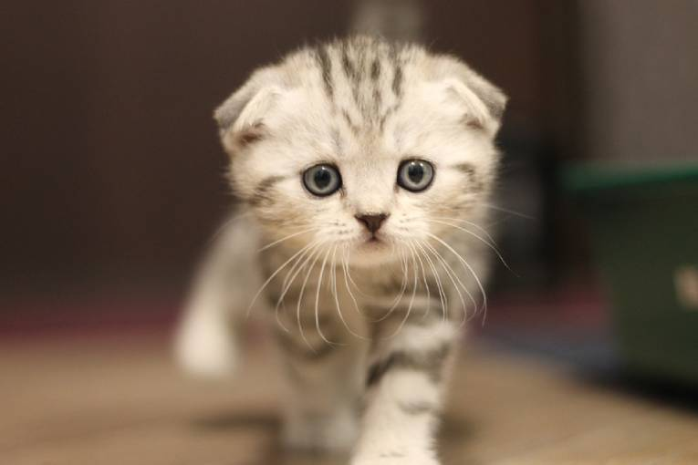

Якщо виставити в ряд фотографії кішок різних порід, та, від якої практично у кожного обличчя розпливеться в милій посмішці, буде шотландська висловуха кішка. Ви напевно бачили лисих котів та котів, які схожі на хижаків – міні-леопардів. Шотландці схожі на совенят. Ці дивовижні милі мордочки викликають бажання терміново їх обійняти. Що чудово в цій породі – вона легко прийме ваш темп життя. Ви весь день проводите у роз'їздах поза домом, шотландець спокійно вас дочекається без зайвих страждань і смутку. Ви любите галасливі компанії і у вас завжди вдома багато людей? Кіт із задоволенням візьме участь у всіх активних іграх.
Шотландські кішки допитливі, як і будь-які інші тварини. Виховання й дресування сприймають позитивно. Це слухняні пухнастики, які не прагнуть рознести всю квартиру до вашого повернення. Скотіш – ручний кіт, тому обійми та сон або спільний перегляд серіалу на ваших колінах - це про нього. А ще вони дуже мило стоять на задніх лапках.
Особливості породи:
Великі й широко посаджені очі, як у сов, і така ж кругла голова. Якщо у вас шотландський кіт, особливості породи демонструють повну шию й крихітні, широко поставлені вушка з круглими кінчиками. Коти середніх розмірів. На вигляд здається, що це плюшева іграшка – адже коротка шерсть шотландців щільно прилягає до тіла, м'яка й оксамитова на дотик. Забарвлення шотландських кішок буває як одного кольору, так і поєднанням кольорів і навіть зі смужками.
Скотіш зовні схожі на британців. Однак британці більші, більше важать і мають не таку круглу мордочку, як шотландці.
Цікавий момент: як визначити висловухі кошенята чи ні. Вушка можуть залишатися прямими до трьох місяців. Тому не поспішайте забирати кошеня раніше. Ви знаєте, коли кошенята відкривають очі шотландські? До 1,5-2,5 тижнів. Якщо ж ні, знадобиться допомога ветеринара.
Від чого помирають шотландські кішки? Ця порода має схильність до захворювань суглобів. Мова йде саме про висловухих, бо страйти з такими проблемами не стикаються, адже їхні хрящі не деформовані (відсутній ген висловухості).
Я купив шотландське висловухе кошеня: з чого почати догляд?
Особливий догляд за скотішем не потрібен. Шерсть не довга, тому досить двічі на тиждень взяти гребінець і гарненько вичесати свого кота. Або використовувати для цього силіконову рукавичку. У період линяння – вичісування проводимо раз на тиждень.
Так само раз на тиждень варто промивати очі, щоб підтримувати чистоту. Якщо виникло запалення – можна взяти звичайну воду, засіб, прописаний ветеринаром, або ж заварити ромашку і промивати ватним тампоном двічі на день.
Вушка – одночасно й головна візитівка породи і слабке місце. Однак і вони не вимагають щоденної уваги. Догляд за шотландським висловухим кошеням – це акуратна та ніжна чистка вух за допомогою вологого ватного тампона (змочити у спеціальній рідині), яка проводиться кілька разів на місяць. Ватяні палички краще не використовувати. У здорових вушках буде збиратися трохи сірки. Головне при виконанні процедури не робити боляче кошеняті – не тягнути за вуха, не тиснути тампоном і не вивертати вушка. При наявності тонкої скоринки у вухах коричневого кольору – краще відразу звернутися до ветеринара. Адже це може бути ознакою вушного кліща.
Якщо шотландська висловуха кішка, характер якої активний та допитливий, гуляє на свіжому повітрі за містом або біля будинку, обов'язково перевіряйте її шерсть на наявність паразитів після прогулянки.
Важливо, щоб кошеня не боялося водних процедур, тому привчаємо до банних днів з раннього віку. Не варто відразу занурювати кошеня у воду або ж спрямовувати на нього душ. Спочатку можна змочувати вологим рушником і відразу балувати смачненьким. Якщо ваше кошеня дуже грайливе й не може всидіти на одному місці – вушка можна закривати тампонами або руками, щоб в них не потрапила тепла вода. Для миття варто придбати спеціальний котячий шампунь, адже ваші особисті засоби гігієни можуть негативно позначитися на стані шерсті та шкіри улюбленця.
Тепер ви знаєте майже все про висловухих кошенят. Фінальний пункт: стрижка кігтів (а вони досить гострі й тонкі). Використовуємо спеціальні кусачки. Важливо: прибираємо тільки кінчик нігтя. Краще відрізати менше, ніж потрібно, але в жодному разі не більше.
Мій скотіш вже дорослий: що зміниться у догляді?
Догляд за дорослим котом простіший, адже він вже до всього привчений і звик до регулярних процедур. Ще раз переглядаємо догляд за кошеням і продовжуємо в тому ж ритмі. У нас залишається вичісування шерсті. Чистимо вушка й оченята. Стежимо за кігтями. Раз на місяць купаємо кішку. І пам'ятаємо, що регулярний візит до ветеринара – запорука спокою господаря і здоров'я вашого вихованця.
Як годувати шотландських кішок?
Якісний корм повинен задовольняти енергетичні потреби тварини, підтримувати стан м'язів, кісток, шкіри та шерсті. На готових раціонах вказується потрібна кількість корму для конкретного розміру тварини та її активності. Адже калораж для кота, який весь час проводить на дивані або під диваном, і для кішки, яка не сидить на місці ні хвилини, різні. Активним пухнастикам потрібна ще чверть або майже половина від нормальної дози.
Свіжу чисту воду в котячій мисці міняємо постійно і миємо миску щодня. Приймання їжі у кішок – двічі на день. Тому добову дозу корму можна розділити на дві рівні частини і насипати в котячу миску вранці та ввечері.
Амінокислота таурин, важлива для кішок, знаходиться в білках тваринного походження. Тому в раціоні кішки обов'язково повинно бути м'ясо. Якщо ваш кіт на натуральному харчуванні, жирні баранина та свинина не підходять. А відварна птиця і яловичина не тільки ситні, але і корисні. Не слід солити та перчити м'ясо, спеції не для кішок. Також шотландцям підходить відварна морська риба без кісток (великих і дрібних).
Ні в якому разі не годуємо дорослих кішок молоком, адже котячий організм не здатний переварити багато лактози. Ми залишаємо молочні продукти (молоко, кефір, нежирну сметану) для кошенят. Про жирні продукти забуваємо.
Вуглеводи у вигляді круп підходять шотландцям. Можна взяти відварну вівсянку або рис. Кішкам протипоказані фрукти. А овочі і рослинна їжа – навпаки. Можна вдома пророщувати насіння котячої трави, адже трава, зібрана на вулиці, містить небажані паразити і бактерії.
Додаткові вітаміни та мінерали можна придбати у ветеринарній аптеці або зоомагазині. Обов'язково вводьте корисні мікроелементи в натуральний раціон кота.
Промислові корми підбирають всі вищевказані натуральні продукти і створюють готові вологі та сухі раціони для дорослих шотландських котів і кошенят. Якщо ви не хочете кожен день витрачати вільний час на підготовку окремої їжі для кота – готовий раціон дасть тварині всі поживні і корисні речовини, які він потребує. Можливо, знадобиться кілька пробних заходів з різними виробниками, але коли ви підберете ідеальний варіант, ваш скоттиш фолд буде повністю задоволений і забезпечений їжею для здорового й приємного способу життя!
Нажміть на мене,щоб піднятись на початок сторінки